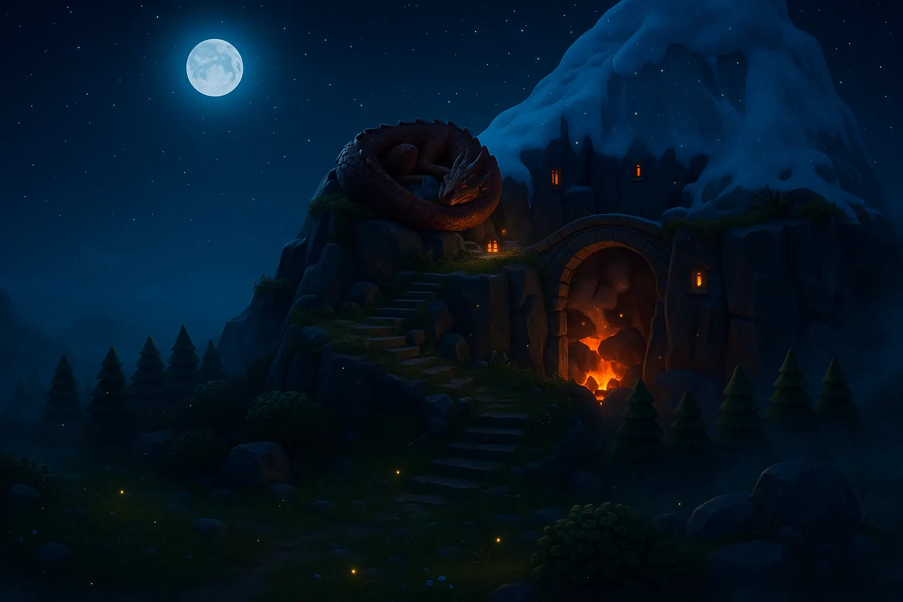
매일 한 걸음,말문이 트이는 산
영어·일본어 일상회화를 배우는 앱. 고래 기사가 되어 tier 1부터 60까지 실력의 산을 올라요. 원어민 흉내가 아니라, 일상에서 막힘없이 말하는 게 목표예요.
Google Play 출시 예정
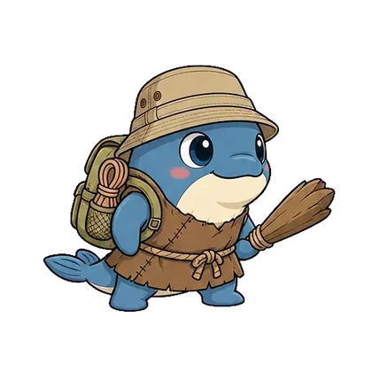
옷이 바뀌면,
실력이 오른 거예요
5 tier마다 관문이 있고, 관문마다 보스가 길을 막아요. 보스를 넘으면 다음 구간으로 올라가고, 고래 기사의 장비도 한 벌씩 좋아져요. 누더기에서 황금 갑옷까지, 관문은 모두 열두 개예요.
- 출발1–5
 tier 56–10
tier 56–10 tier 1011–15
tier 1011–15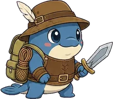
 tier 1516–20
tier 1516–20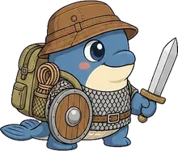
 tier 2021–25
tier 2021–25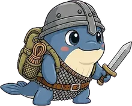
 tier 2526–30
tier 2526–30 tier 3031–35
tier 3031–35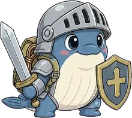
 tier 3536–40
tier 3536–40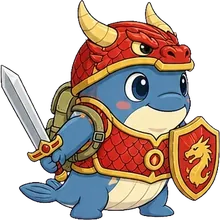
 tier 4041–45
tier 4041–45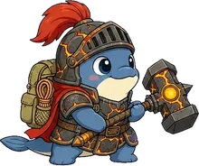
 tier 4546–50
tier 4546–50 tier 5051–55
tier 5051–55 tier 5556–60
tier 5556–60 tier 60정상
tier 60정상
계단마다 붙은 얼굴이 그 구간 앞을 지키는 관문 보스예요. 첫 관문은 안개 폭포의 주술사, 마지막은 황금 갑옷의 왕.
오늘의 미션
오늘 갈 길은
이미 깔려 있어요
단어, 숙어, 문법, 말하기가 한 줄 길로 이어져요. 새 단어는 서로 다른 예문 세 개의 빈칸을 직접 채우며 익히고, 틀린 문제는 그 자리에서 다시 풀어요. 미션은 하루에 하나, 자정이 지나면 새 길이 열려요.
- 단어
- 숙어
- 문법
- 예문 빈칸 쓰기
- 말하기


AI 튜터
막히면,
바로 물어보세요
단어 뜻부터 뉘앙스, 내 문장 고치기까지. 말투가 다른 선생님 중에 골라서 편하게 물어봐요.
- 뜻과 쓰임
- 예문
- 선생님 고르기


프리톡
병원에서, 식당에서,
공항에서
마을 사람들을 찾아가 실제 상황으로 대화해요. 목소리로 말하면 알아듣고 대답해 줍니다.
- 병원
- 식당
- 공항


복습과 노트
잊을 때쯤,
다시 나와요
간격 반복 퀴즈로 잊기 직전에 다시 꺼내 줘요. 배운 단어와 내가 말한 문장은 노트에 차곡차곡 쌓입니다.
- 뜻 맞히기
- 빈칸 채우기
- 받아쓰기
- 내가 배운 문장


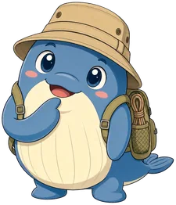
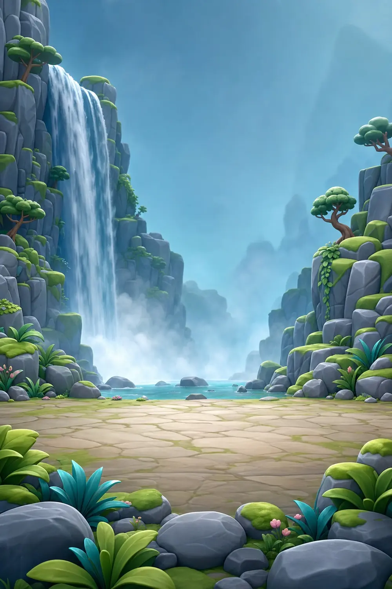
보스전
관문 앞,
배운 단어로 싸운다
5 tier마다 보스가 길을 막아요. 문제는 내가 실제로 공부한 단어에서만 나옵니다. 이기면 관문을 넘어 다음 구간으로.
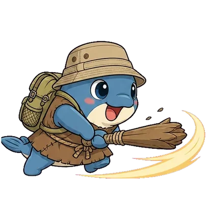


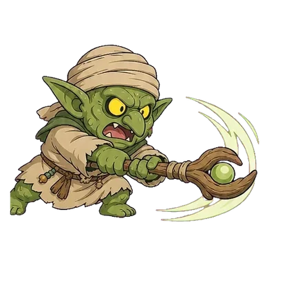
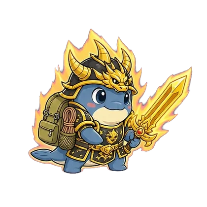
정상에서 기다릴게요
누더기 옷의 tier 1에서, 황금 갑옷의 정상까지. 하루 한 걸음이면 충분해요.
Google Play 출시 예정